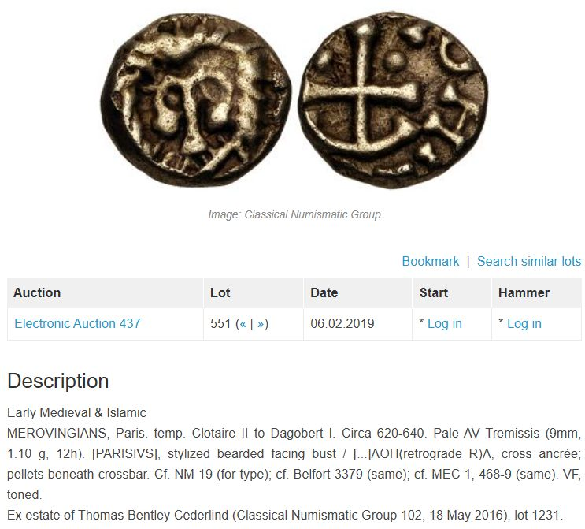
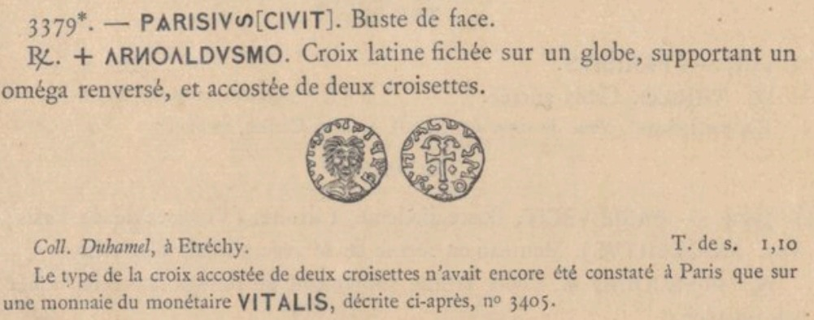
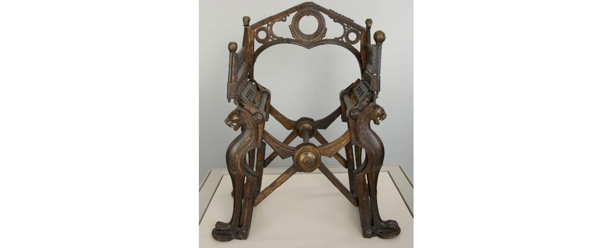

Estas duas moedas entram no mercado no século XXI. Logo, não sei se são autênticas, até porque não sou entendido nesta numária. Se o forem, são moedas de Dagoberto, o último rei merovíngio que, no século VII, exerceu o poder de facto.
A moeda da Stack's, que me deixa muitas dúvidas, será certamente de um estilo distinto da da CNG, que por sua vez é referida como sendo a mesma que se reproduz em Belfort, 1892, não parecendo que o seja.
Não tendo encontrado mais exemplares do tipo, salta a vista a maior afinidade deste busto com um leão, portador de juba, do que com o rei Dagoberto, ainda que considerando alguma eventual "barbaridade", que nem parece coadunável com o gosto revelado no trono em que se sentava.
Na moeda da CNG vêem-se pêlos no putativo "queixo" do busto. E esses pêlos até poderiam ser de barba, mas a verdade é que se estendem à face, onde não se gravou qualquer boca, e à testa. Ora, estando espalhados pela cabeça do busto, naturalmente que a hipótese deste se tratar de um animal fará mais sentido do que a de se tratar de uma pessoa.
Julgo que a âncora é mais uma das derivações iconográficas da árvore da vida. No fundo, é a raiz, tantas vezes referida na Bíblia. Jessé, na dimensão genealógica. Acoplada à cruz, significa a "arbor crucis".
A árvore da vida está intimamente relacionada com os ciclos da criação e da regeneração. E a esses dois ciclos se associa também o leão, visto que é dele que emana o sopro da criação, que era já o de Salomão; como são as suas lambidelas que, lendariamente, resuscitam as crias nadas-mortas.
O leão de Judá é Cristo, é Miguel e é Salomão. Talvez por isso lhe cresça uma árvore da vida na face, que foi repetida nos cânones figurativos da arte românica.
No trono de Dagoberto podem-se ver os dois leões que estavam já às portas de Micenas. Curiosamente, as traves que unem as pernas fazem um alfa e, no espaldar, desenha-se um coração, com duas volutas que, invertidas, formam um ómega.
Mesmo ao cimo do trono, três círculos - a unicidade, a totalidade e a Trindade.